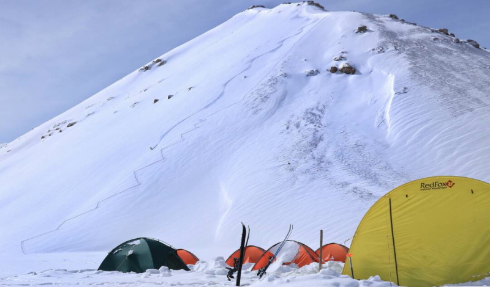

Real adventure starts beyond the habitual supports, only relying on native experience can get you into the most unexplored Mountains. Hitting first descents are still possible not otherwise than in the remotest flung wilderness as it means.
Saryjaz districts earliest mapped in 1930s by former Soviet Union, a fairly number of expeditions crawled all over the steppes but however, it's impossible to say the area has "settled" all these years. During the USSR the region was restricted for access and mostly the times it was simply closed for 5-10 years.
These days it’s possible to get border zone permits for hiking the area but we all about pushing our passion of skiing further and higher in order to enjoy the most memorable moments in the mountains.
Since summer of 2018 we providing a ready camps with a best access point to the spectacular snow-capped peaks over 4500m of the Saryjaz range. Our base mean more about sparkling alpine wilderness and rugged peaks so it best suited for ski-alpinism guides with their private groups or self-guided groups who have extensive backcountry ski experience.
FOOD:
Breakfasts: Are starts with a coffee which ends with omelettes, french toasts, pancakes, burritos, porages and lots of sweets
Lunches: Packed lunchboxes for the field
Apres ski: You are welcome to our dining yurt anytime especially after ski days to hang there for some tea with bred and cheese/meet slice, where we pull out the maps and discuss the routes for further days.
Dinners: Lagman (Meat and vegetables with spicy sauce on top of a hand-stretched noodles). Plov (Rice with mutton and vegetables). Kuurdak (Fried beef/lam or chicken with potatoes). Shorpo (Soup with chunks of vegetables and lam). Oromo (vegetables and mints rolled in the pasta cooked on steam) Besh barmak (Lam, noodles, onions with a soup of a mutton). Dymdama (Vegetables with beef covered by cabbage and steamed in Kazan). Almost all the meals are have ability to be cooked as a vegetarian one.
Drinks: Unlimited Tea, French press coffee, Home made fruit juice
REQUAREMENTS:
Experience: Group should be build from advanced level of skiers who has on the shoulder at least five seasons on backcountry skitouring, level one avalanche safety course, glacier travel experience, 3C grade mountaineering experience is required. Cause of a rugged climatic conditions of the area this expedition recommended for the most experienced in the outdoor skiers/climbers
Equipment: Special gear: Crampons/ski crampons, ice-axe, carabineers, harness, 2-3 ice screws, 3-4 hardware, friends, jumar, 1-2 ropes (25 m long), helmet.
Insurance: very one who joining us for skiing in KG should have a personal MED-EVAC insurance which can be easily paired with Kyrgyz mountain rescue service.
Personal gear: Participants must have the whole structure of personal equipment in expedition trip: Their own backpacks, personal sleeping bags down to -30 С, warm clothes, down jackets, jacket-windbreaker and pants-windbreaker, gloves, sunglasses, goggles, headlamps etc, everything that you would bring for a expedition trip except bivouacs and kitchen needs.
Gear: Fat skis (115mm-min) or splitboards, Whole structure of avalanche safety gear: (float bag (strongly recommended), transeever/beacons (must), shovel (must), probe (must).